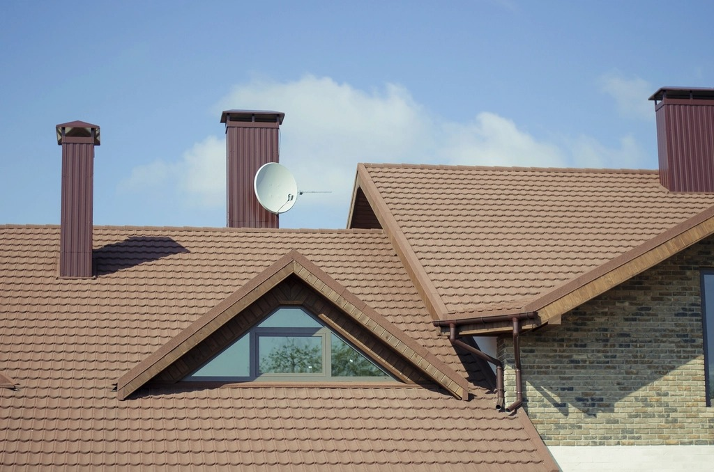
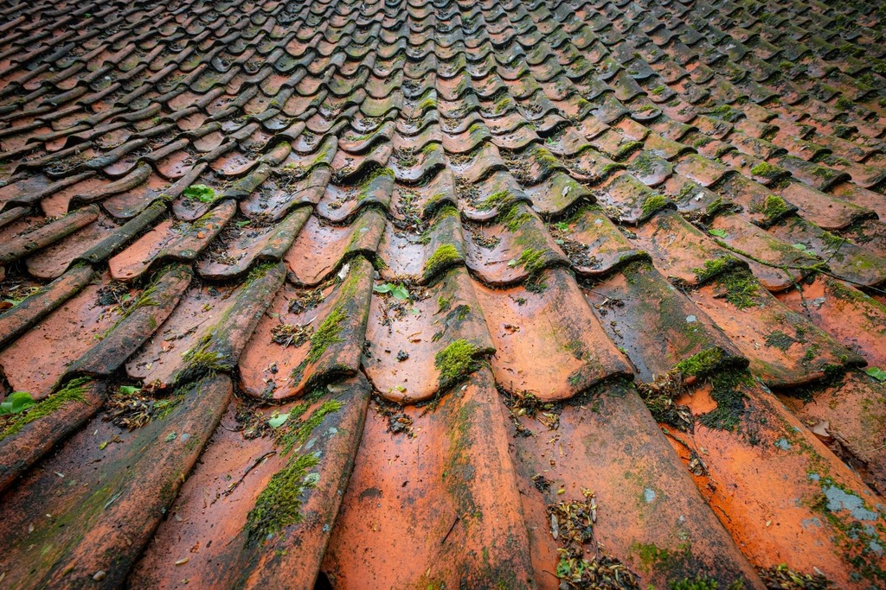
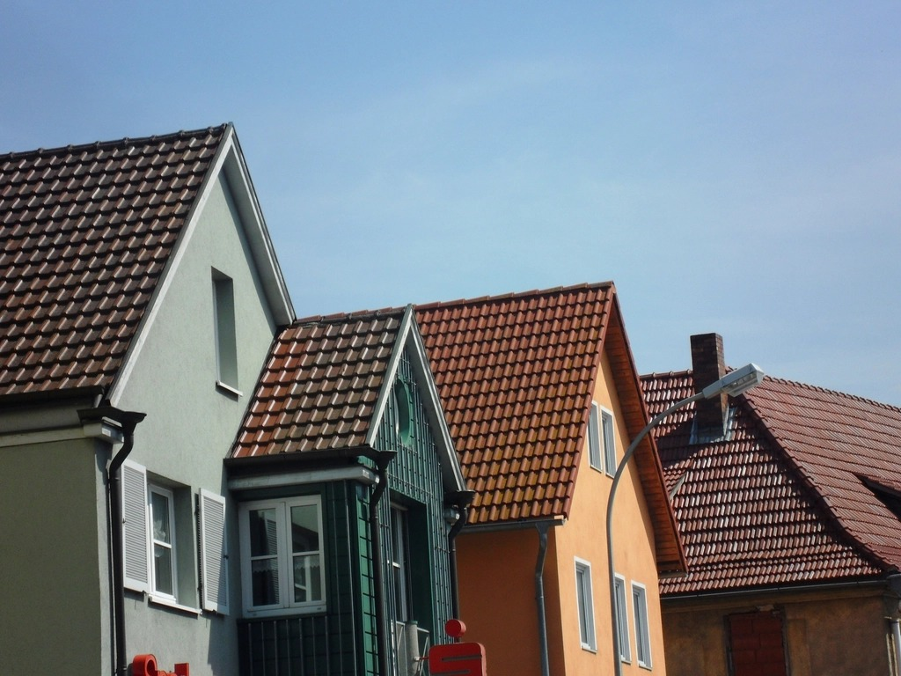
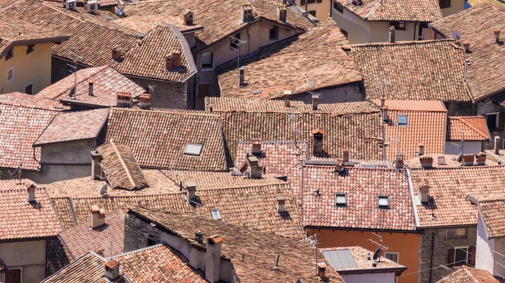
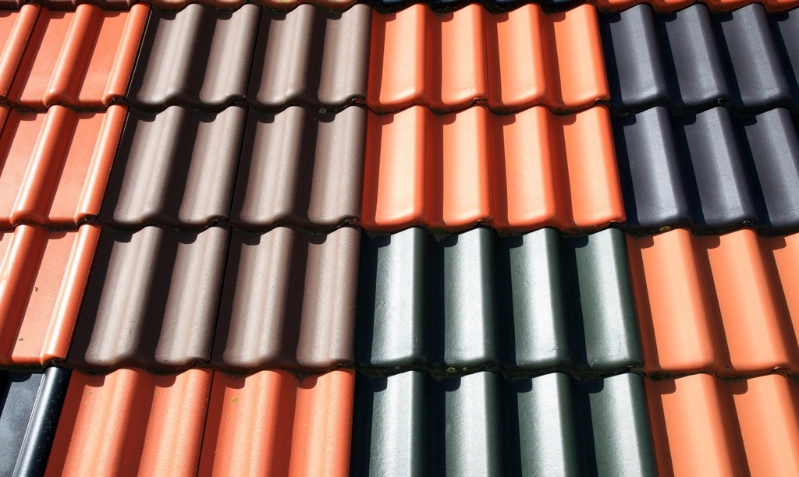

Roof Restoration in Port Macquarie | Ridgeline Roofing
Tile and metal roof restorations across Port Macquarie, Wauchope and Lake Cathie. See how the job works, the usual price range and photos.
they skip the homepage
Lots of customers never see your homepage.
They search for the job, and Google often sends them straight to that job's page. Here are 5 things that page needs. Made-up roofer, real tips. Swipe →
@nexaweb_dev
01
A page for each job, not one long list
ridgelineroofing.com.au/services
RIDGELINE ROOFING
HomeServicesContact
OUR SERVICES
Roof restoration. We restore roofs.
Leak repairs. Fast leak repairs.
Gutters. New gutters and downpipes.
Re-roofing. Tile to metal.
Whirlybirds. Supplied and fitted.
Skylights. Call us.
Roof painting. Many colours.
Insurance work. Ask us.
And more.
8 jobs. 1 page.
Why it hurts: someone searches "roof leak repair Port Macquarie". Google looks for the page that best answers that. One line on a list page isn't much of an answer, so a competitor's page wins.
Fix: give your main jobs their own page. What it is, how you do it, photos, a rough price.
@nexaweb_dev
02
Say where you work, up top
ridgelineroofing.com.au/roof-restoration
RIDGELINE ROOFING
Get a quote

ROOF RESTORATION
Quality work at a fair price.
Book a free roof check
...where?
Why it hurts: people want to know you come to them before they read on. And naming your town and suburbs on the page helps Google match searches like "roof restoration Port Macquarie".
Fix: "Roof restoration in Port Macquarie" as the heading, then list the areas you cover: Wauchope, Laurieton, Lake Cathie.
@nexaweb_dev
03
Show how the job goes
ridgelineroofing.com.au/roof-restoration

Photos like this from your roof check, so you see what we see.
HOW IT WORKS
1Free roof check. About 30 minutes. We send you photos.
2Written quote within 2 working days.
3Clean and repair. Broken tiles swapped, ridges re-pointed.
4Coat and clean up. Usually 3 to 4 days on site, weather allowing.
Why it hurts: a big job feels risky when you can't picture it. How long? Will they turn up? Who checks the roof? If the page doesn't say, people put it off or call someone who explains it.
Fix: 3 to 5 plain steps, from first call to clean up, with how long each one takes.
@nexaweb_dev
04
Answer the worries before they ask
Why it hurts: every customer has the same few worries. If the page doesn't answer them, the question sits there and the quote request never comes.
Fix: write down what you get asked on every quote. Answer each one on the page, in plain words.
RIDGELINE ROOFING

COMMON QUESTIONS
Do I need to be home?+
What if it rains mid job?−
We only coat on dry days and cover any open spots overnight. Rain days just move the finish date.
Will you walk on my solar panels?+
Is there a warranty?+
Can I pay in stages?+
@nexaweb_dev
05
Don't end on a dead end
ridgelineroofing.com.au/roof-restoration
WHILE WE'RE UP THERE

Gutter replacement →
Rusty gutters? Done in the same visit.
Leak repairs →
Whirlybirds →
Roof painting colours →
Book a free roof check
the next job
Why it hurts: roof jobs often come with gutter jobs. If the page just stops, people go back to Google and find someone else. Links between your own pages also help Google find them and understand each one.
Fix: end every service page with links to 2 or 3 related jobs, plus one clear next step.
@nexaweb_dev

Check one page today
It has its own page
It says where you work
It shows how the job goes
It answers the worries
It links to the next job
Start with the job that pays you best. Save this, send it to a tradie mate, and follow @nexaweb_dev for more.